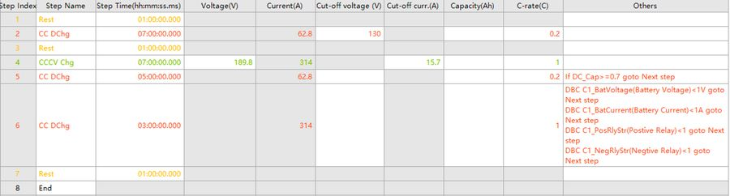

Test programs, raw logs and auxiliary channels are written to a schema you can query. There is no per-seat licence and no export format that only one vendor can open.
Schedules are built from programmable steps: charge, discharge, rest, pulse, loop and formula-based termination. A single program can hold up to 254 editable lines, which is enough for multi-stage formation protocols without splitting them across templates.

BTS control · schedule editor and live channel view
Raw samples land in a relational schema with channel identity and timestamps intact. Export is a view of that schema, not a separate conversion step.
| Output | Use |
|---|---|
| CSV / XLSX | Quick analysis, MATLAB, Origin, pandas |
| SQL Server / PostgreSQL | Direct queries on the live archive |
| REST API | LIMS integration, dashboards, automation |
| Python client | Scripted analysis and batch processing |
# pull one channel, one cycle, raw samples
from cellaris import Client
c = Client("https://lab.example/", token=TOKEN)
df = c.samples(
channel="R04-C07",
cycle=3,
fields=["t", "i", "v", "temp"],
)
df.to_parquet("cycle03.parquet")Illustrative client usage. The API reference ships with the instrument.